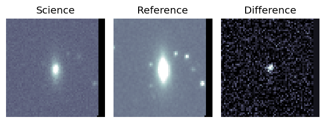
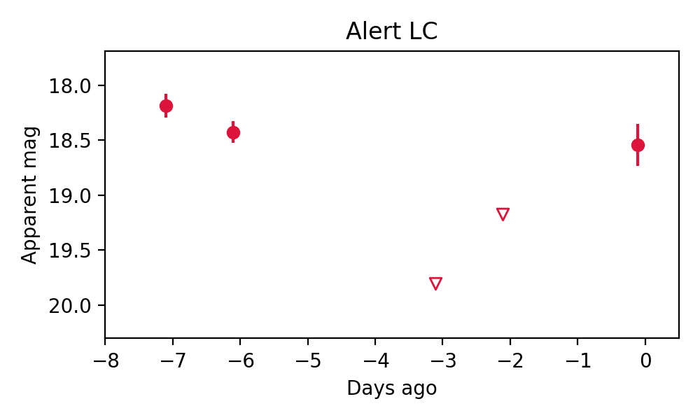

Candidate List 20260210Previous Day Next Day
Section 1: New Sources (age<1d) Section 2: Old (1-5d) sources observed last nightplaceholder
Section 2: Older Sources Observed Last Night (2)
0. ZTF26aaewevg (Afterglow?) [Back to Top] [Share] [Trigger Swift] [Fritz] [Lasair]RA, Dec: 261.0239, -3.07238 17h24m5.74s, -3d-4m-20.57sGalactic (l, b): 19.7524, 17.82499 ext(g-r) = 0.666

TESS: Sectors 118
PS1: 1 source in 3 arcsec Closest: d = 0.97 arcsec photoz=0.15+/-0.01 peak abs mag = -22.52
LegacySurvey: 0 sources in 3 arcsec

Rise Rate:
g: -99 mag/day
r: 0.96 mag/day
i: -99 mag/day
Fade Rate:
g: -99 mag/day
r: 0.46 mag/day
i: -99 mag/day
1. ZTF26aafgfmi (Afterglow?) [Back to Top] [Share] [Trigger Swift] [Fritz] [Lasair]RA, Dec: 187.06346, 44.4559 12h28m15.23s, 44d27m21.26sGalactic (l, b): 136.46449, 72.05813 ext(g-r) = 0.017


TESS: Sectors [49 76]
SDSS (10 arcsec):Found SDSS phot-z: z=0.03; peak abs mag = -18.21
PS1: 0 sources in 3 arcsec
LegacySurvey: 1 sources in 3 arcsec Closest: d = 9.96 arcsec, 180.1 deg (east of north) photoz=0.04 (68% bounds 0.0, 0.08), type=PSF peak abs mag = -18.83 (68% bounds -13.95, -20.14)

Extinction-corrected gr color:
From alerts: -0.03 +/- 0.06 mag
Consistent with synchrotron, g-r>0!
Rise Rate:
g: 0.59 mag/day
r: 0.55 mag/day
i: -99 mag/day
Fade Rate:
g: -99 mag/day
r: -99 mag/day
i: -99 mag/day